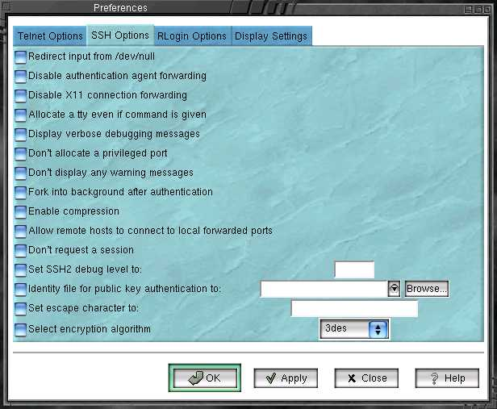

SSH options

Redirect input from /dev/null - not from stdin
Disable authentication agent forwarding
Disable X11 connection forwarding
Allocate a tty even if a command is given
Enable verbose mode. Display verbose debugging messages. Print extensive debug information to stderr. debug_level is a number from 0 to 99, where 99 specifies that all debug information should be displayed
Don't display any warning messages.
Don't request a session channel. This can be used with port-forwarding requests if a session channel (and tty) isn't needed, or the server doesn't give one.
Fork into background after authentication. This option can also be specified in the configuration file. Implies '-S' and '-n'. With this option, ssh2 stays in the background, waiting for connections indefinitely (it has to be killed for it to stop listening). With an optional `o' argument, it goes to ``one-shot'' mode, which means that once all channels are closed, ssh2 exits.
Enable compression of the data stream.
Set the escape character to: ___. Use ``none'' to disable. Leave blank for default.
Specifies the identity file for public key authentication. Leave blank for default.
Select the encryption algorithm that you want to use. Only 3DES
and Blowfish are available for OpenSSH. For any other option it will only
work for SSH.